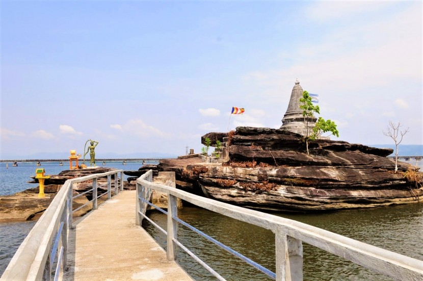
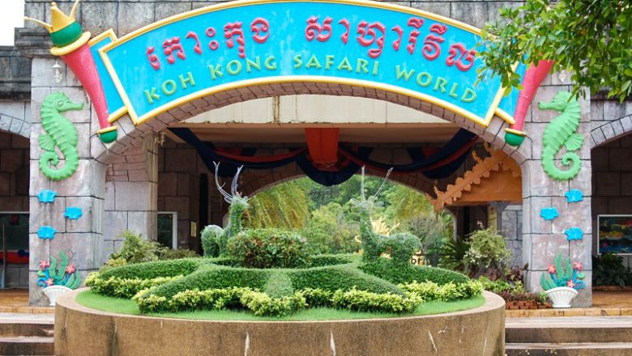
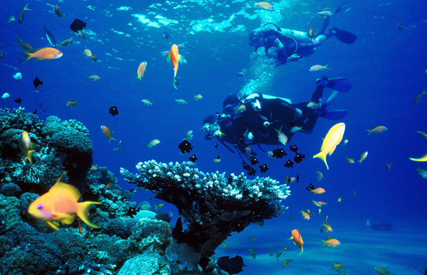
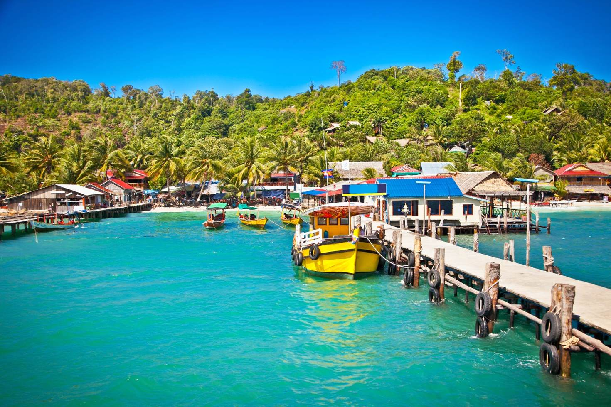
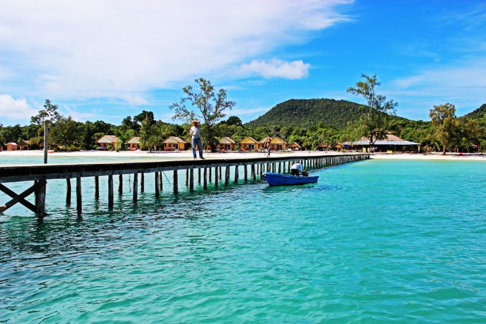

Koh Kong is the most southwestern province of Cambodia. It is one of the biggest provinces in the whole country with a alot of attractions spot undeveloped coastline and a mountainous, forested and largely inaccessible interior, which embraces part of the Cardamom Mountains, the biggest coherent rainforest of Southeast Asia. Its tourist attractions include abundant wildlife; big waterfalls and casinos on the border to Thailand, while an Export Processing Zone and new port facilities are being developed for international trade.
Dragon Den is what you might call Koh Rong’s first proper “bar”. While the majority of venues simply offer somewhere to enjoy cold and cheap beers in some degree of comfort, the drinks menu here is much longer, boasting imported wheat beers and even their own microbrews.The prices are still pretty reasonable, with draught Five Men Fresh Beer from Sihanoukville available for just about US$1. You can find Dragon Den near the ferry terminal of Koh Tui Village.
Police Beach is the nearest thing to Thailand’s famous Full Moon Party on Koh Phangan’s Haad Rin Beach, with the added bonus that the party is twice a week instead of once a month.The beach is just a short walk along the coast from Koh Tui Village, with entrance from about US$5 in advance or US$7.50 at the door (though prices are prone to rising during busy periods). The atmosphere and size of the party make it similar to what Koh Phangan was like when the parties there first got started, being much safer and more relaxed.
Khun Chhang Khun Phen stupa sits on a rock in the middle of the sea tributary, about 1 kilometer from the provincial town. The stupa is 4 meters high and made of concrete. Because the site is small-only 40 square meters, including the stupa-it can accommodate only 10 to 15 visitors at a time. The stupa is about 1 kilometer from the provincial town. Koh Kong residents worship there and often visit the site on national holidays and traditional festivals. Khun Chhang Khun Phen is related to a Khmer legend. Once upon a time, there was villager's daughter named Thim, who was loved by a man named Khun Chhang. Khun Chhang was bold-headed and not very handsome, but his family was rich.Thim, however, did not love Khun Chhang, they became engaged and Khun Chhang married her.She later betrayed her husband to love a commander named Khun Phen. When Khun Chhang learned of his wife's affair, he complained to the King. The King decided to cut Thim's body into two parts. After Thim died, Khun Chhang buried her at the same place where she was killed. Because he wanted her to be reincarnated, Khun Chhang put up a soul flag pole on the east bank of the stream, facing where Thim was buried. Then he built a stupa in memory of their love. Later, the west bank of the stream was named Chetdey (a stupa) village, and the east bank was named Dangtung (a flage pole) village.
Koh Kong Safari World in Koh Kong is a small zoological park with more than 800 animals from almost 100 species such as bears, ostriches, kangaroos, giraffes, tigers, dolphins, deer and several other species from around the world. There are also several animal shows such as crocodile-show, bird-show, orangutan-show or a dolphin-show in the mornings and afternoons.The animal theme park is great place for families and there is also a beach and a restaurant. Koh Kong Safari World is located near the Koh Kong Resort just 500 meters from the border between Cambodia and Thailand at Cham Yeam/Had Lek. There is also a caterpillar train service running between the Koh Kong Resort and Safari World.Animal welfare may not be the primary consideration at Koh Kong Safari World, run by Koh Kong International Resort (the casino-hotel a few kilometres away at the border), but the Disneyesque gateway - in a style that Bavaria's mad King Ludwig II would have found irresistible -doesn't hint at anything sinister.The park has the usual zoo animals but it also puts on the sort of live-animal shows banned in most countries, with performances reminiscent of a 19th-century circus sideshow. Every morning, and into the early afternoon, birds ride tiny bicycles, orang-utans dressed up as boxers throw punches and a man puts his head inside a crocodile's mouth.
Koh Kong Divers is the first PADI scuba diving operator in Koh Kong and offers a full range of PADI diving courses from beginner right through to professional dive master level. The team can speak a number of languages, including English, French and German. Koh Kong Divers offers daily boat trips and fund dives trips to exclusive premium dive sites in one of the few unexplored and unspoilt island archipelagos in the world.Furthermore snorkelling and sightseeing trips around virgin islands as well as adventure travel and tour services. Although not known as a top dive destination the waters around the Cambodian coastline are now becoming one of the world's newest diving destinations, which still have yet to be explored. The Koh S'dach Archipelago offers some splendid diving and untouched coral reefs. A hidden jewel, just waiting to be explored! There are dive sites suited for all levels of divers; however some of the best dive sites require an advanced level of certification. The office of Koh Kong Divers is located at the riverfront of Koh Kong Town next to the Koh Kong Guesthouse. The Dive Center is located at Koh Totang Island.
One of the most interesting places in and around the province of Koh Kong is the Koh Kong Krov Weach, Koh Kong. The travelers coming in from different parts of the world make it a point to visit the Koh Kong Krov Weach, Koh Kong to spend some fun-filled time with their kids as well as with all of their near and dear ones. The Koh Kong Krov Weach is not located in centre of the provincial town as it spans over a wide area. Since the Koh Kong Krov Weach in Koh Kong is a recreational area therefore all the travelers whether young or old like to spend their time here and take back home some treasured memories of the same. The Koh Kong Krov Weach, Koh Kong is located at a distance of about thirty-five kilometers from the provincial town. But the journey takes approximately three hours and fifteen minutes since the road goes in a round about way owing to the terrain of the region. The Koh Kong Krov Weach in the Koh Kapie Commune of the Koh Kong District comprises of parks and beaches where everyone can have a great time. The sprawling parks and the sandy beach are the perfect places for you to spend some quality time amidst fun and laughter. 
Koh Moul Resort Koh Kong, the biggest island in Cambodia, is 22 kilometers long and 7 kilometers wide. The island is located in Koh Kong district, about 24 kilometers south of Koh Kong provincial town. Koh Moul is 350 meters above sea level. The island has many hills and is rich in natural scenery. Koh Kong Krav has more than 10 waterfalls that range from 6 to 25 meters in height. Koh Moul features 6 beautiful beaches, known as Deum Dong Beach 1 to 6, that range from 3,000 to 5,000 meters long. All have beautiful white sand and limpid water. The water surrounding the island are full of black and white dolphines that appear along the beach from 9 to 10:30 in the morning and 5 to 7:30 in the evening. Koh Mool Resort (Kor Kong Krau), Koh Kong is visited by thousands of travelers from all over the world as is counted among the topmost tourist attractions in Koh Kong. Situated at one of the idyllic locations of Koh Kong the Koh Mool Resort (Kor Kong Krau), Koh Kong is next to paradise. Known as the ?largest island in Cambodia?, Koh Mool is only a little away from the charming town of Koh Kong. Although much of Koh Kong still remains unexplored the tourism industry is flourishing and you will see some of the finest places of interest in Koh Kong. Koh Mool Resort (Kor Kong Krau) is only 24 km away from the centre of the town and you can hire a car to visit this lovely place. It is the natural splendor of Koh Moul Resort (Kor Kong Krau) in Koh Kong that attracts thousands of travelers.Apart from the lovely retreats one can find waterfalls and you will stand mesmerized before the cascading waters of the fall from the height of 25 m. Apart from the tall waterfalls one can also see a number of small springs, and nooks in Koh Moul Resort (Kor Kong Krau), Koh Kong. Apart from the gushing springs you will see some the dolphins which will playfully come near you. As you stand on the beaches you will be simply surprised to see the black and white dolphins which are fearless of human touch. Your kids will enjoy the dolphin show that is organized at the Koh Moul Resort (Kor Kong Krau), Koh Kong for the recreation of the guests. if you are planning to stay for sometime then you can put up at any of the lovely retreats near the beach. A walk on the beach in the moonlit night is an experience you will never forget.